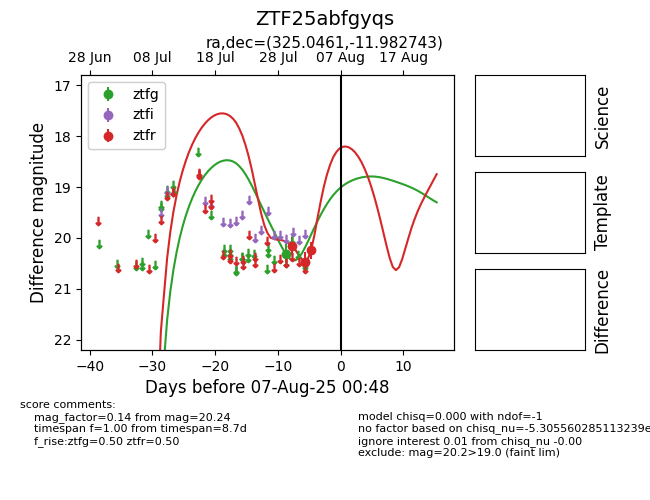

Target ZTF25abfgyqs at 2025-08-07 06:30, see:
FINK: fink-portal.org/ZTF25abfgyqs
Lasair: lasair-ztf.lsst.ac.uk/objects/ZTF25abfgyqs
ALeRCE: alerce.online/object/ZTF25abfgyqs
alt names
ZTF25abfgyqs (ztf,fink)
coordinates:
equatorial (ra, dec) = (325.0461,-11.98274)
galactic (l, b) = (41.9293,-42.79023)
photometry
last ztfg=20.31, ztfr=20.37
1 ztfg, 4 ztfr detections
